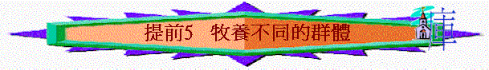

引言 :如要刻意分類，您認為在教會中，有那幾類會眾(群體)，您最易接觸那類? 最難又是那類? 為甚麼? 在提前5章中，保羅教導提摩太如何牧養，帶領教會不同的群體，讓我們今天仔細查考。
查經 :提前5
內容 :
3.v.2「總要清清潔潔」甚麼意思? 您與異性「羊群」相處，交通有沒有難處?
小心, 心要正
二. 關乎際遇坎坷的肢體(v.3-16)
1.v.3題到「要尊敬那真為寡婦的」，為何刻意題到要尊敬寡婦?
她們要守主道比我們更難
2.另外，又要教導寡婦的兒女、孫子、孫女應怎樣? 為何這樣重要?
神所喜悅v.8
3.在您服事的群體中，有沒有「寡婦的兒女、孫子、孫女」? 您有沒有刻意提醒他們以上的事?
4.是否單尊敬寡婦? 保羅又提醒提摩太如何牧養她們? 要囑咐
5.v.9「寡婦記在冊子上」是甚麼意思? 是否每一個寡婦可以記? 資格是怎樣?
「寡婦記在冊子上」立定獻給神
6.既然「記在冊子上」是一件美事，為何年輕的寡婦就可以辭她? 從以上我們又學到甚麼功課? 體諒
7.總結，我們對於一些際遇不好的肢體，我們怎樣牧養他們?
三．關乎位份特別的肢體 (v.17-25)
1.v.17題到「長老」，他們主要的工作是甚麼? 「敬奉」是甚麼意思? 為何要?
「加倍」「更當如此」同誰比較? 反映甚麼屬靈真理?
有位份
2.但長者被疑懷或真是犯錯，怎處理? 要注意甚麼?
有見證+要責備+不存偏見+不偏心
3.v.22「給人行按手的禮」指甚麼，為何突然提到? 要注意甚麼?
「不要在別人的罪上有分」何解?
不要太心急選領袖(可能他們有未顯出的罪,但最終會顯露)
4.v.23與之前經文有甚麼關係? 保羅是甚麼人(徒21:24，民6:1-3，5)，但今日他怎勸提摩太? 從保羅身上我們又學到什麼功課?
5.另外，又為何插入v.24-25節，同之前又有甚麼關係?
6.試分享，您如何挑選團友承擔某崗位事奉? 有甚麼原則?
總結： 在今日查經中，對您有甚麼提醒？